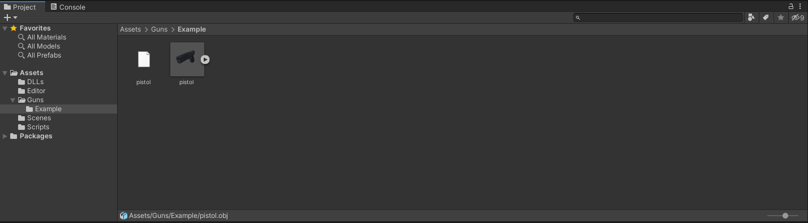

1 - Downloading
So, you want to make a custom gun in Receiver 2? If so, you will have to do some preparation first...
First of all, download the modding kit from Google Drive , and BepInEx from its github repo.
Finished downloading? Good... Let's get to bussiness then.
2 - Installation
Installing BepInEx is rather simple and it was already explained by both the official guide as well as Clan Iwan in his mod installation tutorial:
It requires a little bit more work to use the modding kit. First, you have to create an Unity account and download Unity Hub . This will allow you to create asset bundles that are then loaded into the game.
After downloading and installing Unity Hub, you'll have to import the modding kit into it. Simply press Open -> Add project from disk and select the modding kit's folder

After importing, try to open the project. Unity Editor should open. If you can, replace Wolfire.Receiver2.dll from DLLs folder with the most recent one from the game files (Receiver 2/Receiver2_Data/Managed).
After it's done, you can begin work on a new, modded gun.
3 - Model
Before we start the serious modding, we've got to prepare a model. Even at a basic level it dictates what kind of gun you want and how it will operate.
You can make a model yourself, download it from sites like Thangs or GrabCAD, or grab the model from some other game (not recommended).
After you've found your model of choice there are a few things to do with it. Model must be aligned with Z axis forward, be separated into meshes for individual parts and include all the necessary materials. Recommended solution is to use Blender and export the model as an .obj file with these options:
You can also tweak the size of a model here using Scale slider. If you don't, you'll always be able to do it directly in Unity Editor;
4 - Import
Now we can import the model into Unity. To make your life easier, I suggest creating a new folder to contain all mod files. You can export the model directly in there, or copy it from elsewhere. If you're using .obj files remember to also copy the .mtl file, as it contains materials used by the mesh.
First, you must create a gun GameObject. To do it, simply drag the model into the scene. Model will probably be wrong size, but you can always resize it by clicking in in the assets menu and changing the Scale Factor slider on the top of Inspector menu. After you're done, drag it back to the asset menu to create an Original Object Prefab. You can make a separate folder for storing these prefabs.
Double click a prefab object to edit it.
5 - Preparing our object
We can now start work on the mod proper.
First make sure that the gun is alligned properly, front pointing towards +Z direction. If not, just rotating the model shoud do fine for now. Also confirm that it's the correct size, remembering that squares on the grid are 1m x 1m in size.
Next, select the correct layer. All items in the game should be on layer 8, CosmeticPhysics, you can change it via control below object's name in the inspector. Modding kit has that layer pre-built, but you can always add it yourself.
We also have to add some child objects. They are necessary for the gun to function properly:
- center_of_mass - Used for RigidBody calculations
- point_recoil_rotate - Point around which the gun will rotate under recoil
- point_bullet_fire - Bullets come from here
- point_muzzleflash - Flashes come from here
Remember to position these objects properly around your model (for example, point_muzzleflash near the muzzle).
Next comes probably the most important step, scripts. In the most basic form, a gun requires 3 MonoBehaviour scripts:
- GunScript - Controlling most aspects of gun's operation
- InventorySlot - Acts as an anchor for bullets and magazines
- LevelItem - Used to clear the gun while changing levels during Dreaming
These three scripts must be attached to the root object , one highest in the hierarchy. To do this, select the object then click Add Component . You sould be able to search for them.
We'll skip GunScript for a bit and focus on the simple ones first.
The only field we have to set in InventorySlot is the Type enum. We need it to have a value of Gun for it to work properly.
And LevelItem doesn't need any form of config, so we'll just leave it as it is.
Now it's time for the meat of 'er - GunScript. At first, its 153 fields can be intimidating. Fortunately, you don't have to fill all of them for your gun to work.
Most important fields are:
- Internal_name - Name of your gun. It's good practice to format it like Name of the creator/package.Name of the gun
- Type - Has to do with GunScript's base class, must be set to Gun
- Colliders - List of colliders connected to the gun. We'll discuss that later
- Gun_type - Type of gun's action. We'll discuss that later
- Gun_model - What gun is it. We'll discuss that later
- Weapon_group_name - Name of weapon's Mall score group, should be the same as Internal_name
- Is_debug_gun - Whether or not the gun has custom login, should be ticked for now
- Spawn_info_sprite - Sprite used by the weapon while spawning. Unity's built-in sprites can be used
A lot of other fields are also useful, but for now we will focus only on these.
To add colliders to the gun, it's best to have them on separate objects. You will also need at least one collider to be able to pick it up. To do it, create a child object with a type of collider you want and an Item Collider Owner script attached, then assign GunScript to Item_owner field (simply drag the parent object over).
You can then reference it in GunScript by adding it to the Colliders array.
Now for the tricky part - custom enum values. Normally you cannot add enum constants which limits us to only two types of action (Automatic/Revolver) and 14 9 weapon models. Fortunately, there is a workaround.
Modding kit comes equipped with three special scripts:
- CustomCartridgeType
- CustomGunModel
- CustomGunType
They can be used to work around the enum limitations. To use them, add them to the object with GunScript and insert a custom value. Gun_model values for mods start at 1000 and can be looked up in the Google spreadsheet. Simply take the next one ready, or ask SzikakA#3853 on Discord if you're unsure.
As for Gun_type, current value for Custom
action is 2, but that may change later. It's only important for it to be something different than stock values. Let's set it to Automatic for now.
After adding them to the object, select Modding -> Set Custom Values on the top strip. Custom scripts should disappear, and the enum values you've changed will appear blank. This is also done automatically when you build AssetBundles. Speaking of...
6 - Exporting your mod
Receiver 2 uses AssetBundle files to load mods. To export assetbundles, select the prefab in the assets menu. On the bottom of the inspector there are two fields labeled AssetBundle.
On the left, type in the name of your mod. It's important for it to be unique as you can load only one bundle with the same name. A good idea is to go Your Name-Name of the gun. Then, type windows to the field on the right. If you type something else, the game won't load it.
You can then compile the bundle by selecting Assets -> Build AssetBundles from the top stripe. Built bundles can be accessed in AssetBundles folder in the assets menu.
To actually use the gun, create a gun's folder in Receiver 2's Guns directory (%AppData%/LocalLow/Wolfire Games/Receiver2/Guns, easy to access by pressing Win + R and typing in appdata) and copy the .windows file there.
You can also specify the path that bundles will be copied to after building. To do it, enter Modding -> CustomAssetBundleDirectories and change the value of Path field under your assetbundle. Bundles will then be automatically copied to that location after building.
7 - BepInEx plugin
You can theoretically use the mod right now - simply create a loadout with the correct gun_internal_name and use it in dreaming. But it's not the only option, guns can also be spawned in the compound after all. Making a modded gun spawnable does require a bit of work, however.
First of all, we have to create a BepInEx project, as that will be our platform of choice. To do it, first create a directory somewhere on your PC to house all BepInEx projects you'll make. Next, open the Command Prompt (search for cmd) and navigate to the cosen folder (use Letter: to navigate between drives, dir to see available folders and cd folder name to move between them (cd.. if you want to go back))
Once you're there, follow the official installation guide to setup your BeInEx project.
After creating the project, you should have 3 files in your project's directory
You can then open Plugin.cs with your editor of choice, I'm going to use Microsoft Visual Studio.
There are a lot going on here, it's all explained by the official guide mentioned earlier. What we care for now is that we have to reference some Receiver 2's classes. To do it, let's create a Lib folder and copy the Wolfire.Receiver2.dll from the game files. Then add it to project's dependencies, either by using Visual Studios wizard or by editing the .csproj file.
We should now be able to do this:
Without any errors;
We can now use BepInEx's Harmony library (referenced by typing in using HarmonyLib) to patch your gun into the spawnmenu.
Why do we have to do this? Well, guns are loaded from AssetBundles by method ReceiverCoreScript.Awake and into ReceiverCoreScript.gun_prefabs_all array. But we want it in ReceiverCoreScript.generic_prefabs so we can spawn it. Therefore, we'll need a little trick called postfix patching. It basically lets us add extra code to built-in functions, enabling us to do a lot of useful things.
First, we create a function that will act as a patcher. To do it, we have to include some special attributes.
[HarmonyPostfix]
private static void PatchCoreAwake() {
}
In this example, [HarmonyPatch] specifies the type and name of the method we'll be patching while [HarmonyPostfix] indicates that our patch will be executed after the original. Now we have to get access to the script and its array. To do it, we add a reference to the instance executing the original method and to gun_prefabs_all array with three _ symbols to indicate that it's a private property.
[HarmonyPostfix]
private static void PatchCoreAwake(ref ReceiverCoreScript __instance, ref GameObject[] ___gun_prefabs_all) {
}
Now, ___gun_prefabs_all contains our gun. We just have to get it out of there and into generic_prefabs. To do it, a simple way is to use IEnumerable.Single() method from System.Linq with predicate searching for a gun with a gun_model value that you assigned, then add it to generic_prefabs. It helps if a model is assigned to a variable, as you might have to use it later.
[HarmonyPatch(typeof(ReceiverCoreScript), "Awake")]
[HarmonyPostfix]
private static void PatchCoreAwake(ref ReceiverCoreScript __instance, ref GameObject[] ___gun_prefabs_all) {
GunScript mod = null;
mod = ___gun_prefabs_all.Single( gameObject => {
return ((int) gameObject.GetComponent<GunScript>().gun_model == gun_model);
}).GetComponent<GunScript>();
}
Unfortunately, since generic_prefabs is a fixed size array we cannot add our modded gun directly. We can however turn the array into a List and add it there, then revert the List to being an array.
[HarmonyPatch(typeof(ReceiverCoreScript), "Awake")]
[HarmonyPostfix]
private static void PatchCoreAwake(ref ReceiverCoreScript __instance, ref GameObject[] ___gun_prefabs_all) {
GunScript mod = null;
mod = ___gun_prefabs_all.Single( gameObject => {
return ((int) gameObject.GetComponent<GunScript>().gun_model == gun_model);
}).GetComponent<GunScript>();
__instance.generic_prefabs = new List
}
After that, all is left is to apply the patch on plugin startup by calling method Harmony.CreateAndPatchAll(Type) with Type being the type of your plugin.
Finished code should look similar to that:
Now all that's left to do is to compile the code and move the created dll file to BepInEx's plugins directory (dll will have the same name as the project's namespace).
After that's done, let's launch the game and see what happens!
Receiver 2 doesn't know where any gun parts are, including sights. Changes are your mod will not have the correct sight picture. To fix it, we'll have to go back to Unity Editor.
8 - finishing touches
To correctly position the gun during various actions Receiver 2 uses a system of GameObjects called Poses
. They are just objects that are offset to the origin, game then applies this offset to the gun in certain situations. There are 8 poses in total, but the game creates them automatically if you don't, so we can skip ones we don't need.
- pose_aim_down_sights - controls the general position of the gun, as well as the sight picture
- pose_slide_pull - controls the position of a gun when pressing R
- pose_reload - controls the position of a gun when reloading and when its hammer is dropped
- pose_press_check - controls the position of a gun when checking the chamber
- pose_inspect_cylinder - controls the position of a gun when the cylinder is open
- pose_add_rounds - seems to be unused
- pose_eject_rounds - controls the position of a gun when the ejecting rounds from a revolver
- pose_inspect_gun - controls the position of a gun when inspecting it
We'll need to set pose_aim_down_sights postition so that sight are roughly at 0 units Y, or right on the grid. Simple way to do it is to lower gun until grid lines go through the sights.
Then copy the position to the pose object. and bring the gun back up.
Now, build the bundle again, copy it and let's check if it did anything.
If you've followed that guide, you should now have a debug gun of your own. Congratulations! I will release follow-ups on how to make more complicated things, but for now that's it. You can try messing with it yourself, good luck!
X - additional resources
Additional tools that may be useful while creating or debugging your gun:
- dnSpy - C# assembly decompiler, useful for determining what things do in the game
- UnityExplorer - handy for checking real-time updated values of objects in the game
- Example Plugin - example gun plugin used in this guide